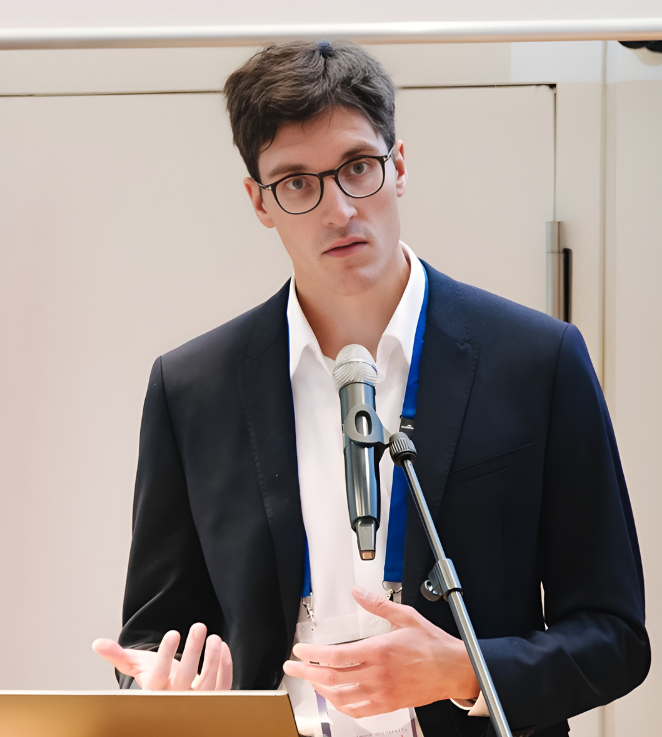

Communication Researcher · TU Dortmund University
I am an associate fellow at TU Dortmund University and postdoc researcher in the Horizon Europe project ADAC.iO. My research interests are in strategic communication, disinformation, and the public sphere.
With a background in strategic communication research and an interdisciplinary orientation, my research focuses on the contents and contexts of public discourse, information disorders, and the public sphere. I focus on qualitative methods.
Lenk, T. (2026). Towards a deeper understanding of information manipulation: Proposing a multilevel framework for the analysis of manipulative narratives. Humanities and Social Sciences Communications.
https://doi.org/10.1057/s41599-026-06656-8Navigating moral minefields in a VUCA world: the contribution of moral foundations theory to strategic communication research and practice. Journal of Communication Management, 28(2), 181–192.
https://doi.org/10.1108/jcom-12-2022-0139Lenk, T. (2025). Conflicts of interest and complexity in the context of organizational communication. Springer eBooks.
https://doi.org/10.1007/978-3-658-48895-6Lenk, T. (2025). Interessenwiderspüche und Komplexität im Kontext der Organisationskommunikation. Springer eBooks.
https://doi.org/10.1007/978-3-658-47075-3Lenk, T. (2024). Desinformation als wahrhaft komplexes Phänomen: Zu einem Beitrag der Komplexitätstheorie für die Desinformations- und Organisationskommunikationsforschung. In: Hoffjann, O., Seeber, L., von der Wense, I. (eds) Strategische Wahrheiten. Springer VS, Wiesbaden.
https://doi.org/10.1007/978-3-658-43831-9_3Lenk, T. & Thummes, K. (2022). Moralische Perspektiven von Rezipient:innen auf Wert- und Interessenkonflikte beim Einsatz künstlicher Intelligenz in der strategischen Kommunikation). In K. Thummes, A. Dudenhausen & U. Röttger (Hrsg.), Wert- und Interessenkonflikte in der strategischen Kommunikation (S. 185-204). Wiesbaden: Springer VS.
https://doi.org/10.1007/978-3-658-35695-8_10Lenk, T. (2026). Democracy under Pressure: On the Study of Post-Truth Forms of Communication and Their Intersections. 71st Annual Conference of the German Communication Association (DGPuK), Dortmund, Germany.
Lenk, T. (2024). Information Manipulation as a Phenomenon of Political Communication. Annual Conference of the DGPuK Division for Public Relations and Organizational Communication, Berlin, Germany.
Lenk, T. (2022). Complexity Theory as a Theoretical Framework for Examining Disinformation Phenomena in Organizational Communication Research. Annual Conference of the DGPuK Division for Public Relations and Organizational Communication, Bamberg, Germany.
Lenk, T. (2022). Navigating Moral Minefields in a VUCA World: The Contribution of Moral Foundations Theory to Research on Issues Management, Risk and Crisis Communication. Annual Conference of the European Public Relations Education and Research Association, Vienna, Austria.
Lenk, T. (2026). Misinformation and its relationship with polarisation. Workshop Moral Panics, Communication Networks and Polarization, University of Passau, Passau, Germany.
Lenk, T. (2025). Panel “Collaborative defence: Joining together the puzzle pieces of the Counter Disinformation community”. Democracy Reporting International’s DisinfoCon 2025, Embassy of Canada to Germany, Berlin, Germany.
Lenk, T. (2025). Techniques and Patterns of Digital Information Manipulation. Inter-regional Platform for Cybersecurity Research, Ministry of the Interior of the State of North Rhine-Westphalia, Düsseldorf, Germany.
Lenk, T. (2025). Types of Misinformation and the Role of Broader Manipulation Techniques. First German Workshop on Detecting and Combating Disinformation, Misinformation and Hate Speech for Media Professionals and Communication Practitioners, University of Potsdam and Max Planck Institute for Human Development, Berlin, Germany.
Lenk, T. (2025). Disinformation in the Age of Artificial Intelligence. 11th SWF Annual Forum 2025 – Communication and AI, Berlin, Germany.
Lenk, T. (2024). Information Operations and the Weaponization of Strategic Communication: Introducing the Concept of Foreign Information Manipulation and Interference to Strategic Communication Research. Talk in the series CeCoR@ASCoR, Amsterdam School of Communication Research, Amsterdam, Netherlands.
Thummes, K., & Lenk, T. (2021). Perception of AI and the Reproduction of Myths. Online workshop Ethics, Hype and Consequences of Artificial Intelligence, University of Greifswald, Germany.
Interview for Wie KI-Fakes bestätigen, was wir sowieso schon glauben. BR24 Radio, 02.04.2026.
https://www.br.de/nachrichten/netzwelt/wie-ki-fakes-bestaetigen-was-wir-sowieso-glauben-faktenfuchs,VFKco5XScience Communication with Dr. Timo Lenk. SAUFEX Podcast, 2026.
https://soundcloud.com/saufex/science-communication-with-dr-timo-lenkTimo Lenk
timo.lenk@posteo.de
Responsible for content: Timo Lenk; address as stated above.